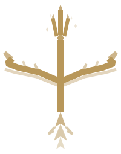

Justice and integrity
in judgement
Apărare. Consultanță. Reprezentare.
Oferim consultanță juridică, asistență și reprezentare în fața instanțelor, autorităților și instituțiilor publice, persoanelor fizice și juridice, precum și redactarea de acte juridice, participarea la negocieri și alte activități specifice profesiei de avocat.
Fiecare mandat este abordat cu rigurozitate analitică, oferind o strategie personalizată care ține seama de circumstanțele specifice ale fiecărui caz.
Scopul nostru este să oferim soluții eficiente, orientate către aspectele comerciale și rentabile.
- Civil, Comercial & Societar
- Recuperări creanțe & Executări silite
- Litigii & Arbitraj
- Contravențional & Penal
- Muncă & Relații de muncă
- Construcții, Infrastructură & Imobiliare
- Tehnologie & Protecția datelor
- Contencios Administrativ & Fiscal
- Asigurări

Balance and fairness
in recovery
Restructurare. Recuperare. Redresare.
Ca experți în domeniul insolvenței, oferim clienților consultanță cu privire la toate aspectele legate de insolvență și restructurare, inclusiv redresarea întreprinderilor, tranzacții cu entități aflate în dificultate, executarea creanțelor, proceduri de insolvență și restructurări transfrontaliere. De asemenea, acționăm în calitate de administratori judiciari și lichidatori numiți de instanță în cadrul unor proceduri complexe.
- Acordul de restructurare
- Concordatul preventiv
- Insolvență
- Reorganizare
- Faliment
- Restructurare extrajudiciară
- Lichidări voluntare persoane juridice
- Lichidarea organizațiilor non-profit
- Recuperări creanțe
- Executări silite